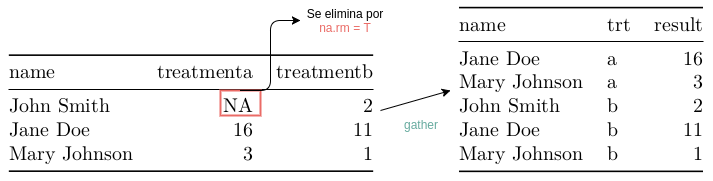

5.3 Datos limpios
Esta sección resume algunas de las funciones existentes para limpiar datos de distintos formatos a R. En particular, se utiliza la conceptualización de datos limpios presentada en Wickham and others (2014) e implementada en el paquete tidyr (H. Wickham 2016b). En la figura 5.5 podemos ver la etapa del análisis de datos correspondiente.
Figura 5.5: Limpieza de datos (Grolemund and Wickham 2016, Introducción).
Mucho del esfuerzo en analítica lidia con la limpieza de datos. Tomar datos de diferentes fuentes y poderlas poner en la forma en la que uno los necesita para realizar analítica toma mucho tiempo y esfuerzo. Existen herramientas que permiten que esta parte sea más fácil y eficiente. Entre éstas se encuentran los criterios de datos limpios.
Los conjuntos de datos limpios (tidy datasets) permiten manipularlos fácilmente, modelarlos y visualizarlos. Aunque funcionan independientemente del lenguaje utilizado, son particularmente útiles en R pues éste es un lenguaje pensado para estructuras de datos tabulares; mismas que son más fácilmente explotables si se usan datos limpios (Wickham and Grolemund 2016).
Los datos limpios tienen una estructura específica: cada variable es una columna, cada observación una fila y tipo de unidad observacional forma una tabla12.
5.3.0.1 Datos limpios en el procesamiento de datos
Esta actividad incluye una gran cantidad de elementos: revisión de valores atípicos, extracción de variables de cadenas en datos no estructurados, imputación de valores perdidos. Los datos limpios son tan solo un subconjunto de este proceso y lidian con el cómo estructurar los datos de manera que se facilite el análisis.
Los criterios de datos limpios están diseñados para facilitar la exploración inicial y el análisis de datos, así como simplificar el desarrollo de herramientas para el análisis de datos que trabajen bien con datos limpios.
Los criterios de datos limpios están muy relacionados a los de las bases de datos relacionales y, por ende, al álgebra relacional de Codd (Wickham and others 2014). Sin embargo, se expresan y enmarcan en lenguaje que le es familiar a estadísticos.
Están creados para lidiar con conjuntos de datos que se encuentran en el mundo real pues -aunque parecen simples- es difícil encontrar datos limpios de origen. Los criterios de datos limpios proporcionan un marco mental a través del cual la intuición es explícita, es decir, proporcionan una manera estándar de ligar la estructura de un dataset (es decir su layout físico) con su semántica (su significado).
5.3.0.1.1 Estructura de datos: un ejemplo
La mayoría de los datos estadísticos están conformados por tablas rectangulares compuestas por filas y columnas. Las columnas casi siempre están etiquetadas (colnames) y las filas a veces lo están.
Tomamos el ejemplo de datos de la figura 5.6 en donde se presentan datos de un experimento13. La tabla contiene dos columnas y tres filas, ambas etiquetadas.
Figura 5.6: Típica presentación de datos.
Podemos estructurar los datos de diferentes maneras pero la abstracción de filas y columnas solamente nos permite pensar en la representación transpuesta que se muestra en la figura 5.7. El diseño cambia pero los datos son los mismos. Además de la apariencia, deberíamos de poder describir la semántica -el significado- de los valores que se muestran en una tabla (Wickham and others 2014, pág. 3) pero la abstracción de filas y columnas no da para más.
Figura 5.7: Mismos datos que en 5.6 pero traspuestos.
5.3.0.2 Semántica
Un conjunto de datos es una colección de valores (normalmente cuantitativos/números o cualitativos/caracteres). Los valores se organizan de dos maneras: cada valor pertenece simultáneamente a una variable y a una observación.
- Una variable contiene todos los valores de una medida y del mismo atributo subyacente (por ejemplo, temperatura, duración, altura, latitud) a través de unidades.
- Una observación, en cambio, contiene todos los valores medidos para la misma unidad (por ejemplo, una persona, un día, un municipio) a través de distintos atributos.
Los mismos datos en las figuras 5.6 y 5.7 los pensamos ahora en estos términos. Tenemos 3 variables:
- persona con tres posibles valores (John, Jane, Mary)
- tratamiento con dos posibles valores (a o b)
- resultado con 6 valores (-, 16, 3, 2, 11, 1)
El diseño del experimento mismo nos habla de la estructura de las observaciones y los posibles valores que pueden tomar. Por ejemplo, en este caso el valor perdido nos dice que, por diseño, se debió de capturar esta variable pero no se hizo (por eso es importante guardarlo como tal)14.
En la figura 5.8 se muestran los mismos datos que antes pero pensados tal que las variables son columnas y las observaciones (en este caso, cada punto en el diseño experimental) son filas.
Figura 5.8: Observaciones son filas, variables columnas.
Normalmente, es fácil determinar cuáles son las observaciones y cuáles son las variables en los distintos casos, pero es difícil dar una definición en forma precisa. Por ejemplo, si tienes teléfonos de casa y celulares, se pueden considerar como dos variables distintas en muchos contextos pero en prevención de fraude necesitas una variable que guarde el tipo de teléfono y otra en la que se guarde el número pues el uso regular del mismo número de teléfono por parte de la misma persona puede ayudar a detectarlo.
En general, es más fácil describir las relaciones funcionales entre las variables que entre las filas pues las puedes operar fácilmente: por ejemplo, el radio entre dos variables, una combinación lineal de varias variables. También es más fácil hacer comparaciones entre grupos de observaciones que entre columnas: la suma, el promedio, la varianza, la moda (Wickham and others 2014, pág. 4).
Las observaciones, por su parte, son más complejas pues normalmente se enmarcan en un análisis específico que se desea realizar con los datos y existen varios niveles. Por ejemplo, en un análisis de ingreso podemos tener datos sociodemográficos de los individuos, datos geográficos del lugar en el que viven, datos macroeconómicos del tiempo específico, datos de la familia del individuo, datos del trabajo del individuo, entre otros.
5.3.1 Datos limpios
Éstos mapean de forma estándar el significado y la estructura de los datos. Un conjunto de datos se considera sucio o limpio dependiendo de cómo las filas, columnas y tablas mapean a observaciones, variables y tipos. En datos limpios:
- Cada variable es una columna.
- Cada observación es una fila.
- Cada tipo de unidad observacional es una tabla / cada valor tiene su celda.
En la figura 5.9 podemos ver estos tres elementos de los datos limpios y cómo se representan en un dataframe.
Figura 5.9: Ejemplificación de datos limpios (Wickham and Grolemund 2016, sección Data Tidying).
Esto equivale a la tercera forma normal de Codd (Wickham and others 2014, pág. 4) enfocado a un solo conjunto de datos y no a datos conectados como en bases relacionales. Los datos sucios son cualquier otro tipo de manera de organizar los datos.
La tabla 5.8 corresponde a datos limpios: cada fila es una observación, es decir, el resultado de un tratamiento a una persona. Cada columna es una variable. Solo tenemos un tipo de unidad observacional, es decir, cada renglón es una unidad del diseño experimental.
Con los datos así ordenados, suele ser más fácil extraer datos que, por ejemplo, en Tabla 5.6.
Ejercicios
- Crea un dataframe con los valores de la tabla 5.6 y otro con los valores de la tabla 5.8.
- Extrae el resultado para (John Smith, tratamiento a) en la primera configuración y en la segunda.
- Especifica el número de tratamientos con la forma sucia y la forma limpia.
- ¿Cuál es la media de los resultados? Usa la forma 1 y la forma 2.
- Extrae los tratamientos del tipo a en la forma 2.
Los datos limpios permiten hacerle preguntas a los datos de manera simple y sistemática. En particular, es una estructura muy útil para programación vectorizada como la que R tiene (el ejercicio 5) porque la forma en la que almacenamos los datos se asegura que valores para diferentes variables de la misma observación siempre están apareados.
Por convención, las variables se acomodan de una forma particular. Las variables fijas (en este ejemplo, las propias al diseño experimental) van primero y posteriormente las variables medidas. Ordenamos éstas de forma que las que están relacionadas sean contiguas.
5.3.2 De sucio a limpio
Los conjuntos de datos normalmente no cumplen con estos criterios. Es raro obtener un conjunto de datos con el cuál podemos trabajar de manera inmediata.
Los 5 problemas más comunes para llevar datos sucios a limpios (Wickham and others 2014, pág. 5) son:
- Los nombres de las columnas son valores, no nombres de variables.
- Múltiples variables se encuentran en la misma columna.
- Las variables están guardadas tanto en filas como en columnas.
- Muchos tipos de unidad observacional se encuentran en la misma tabla.
- Una sola unidad observacional se guardó en varias tablas.
Estos problemas pueden ser resueltos con las funciones implementadas en el paquete tidyr: gather, spread, separate y unite.
5.3.2.1 Los nombres de las columnas son valores, no nombres de variables
La tabla 5.2 muestra datos sucios con este problema. La base acompaña al paquete tidyr (H. Wickham 2016b) y es una muestra de los datos del reporte sobre tuberculosis de la organización mundial de la salud. Contiene observaciones anuales por país para casos de tuberculosis según distintos grupos.
La descripción de todas las variables se puede ver tecleando ?who
Dentro de un reporte, la representación que se tiene de las variables tiene sentido. Por ejemplo, en la tabla 5.2 vemos los casos de tuberculosis para distintos grupos de edad de hombres en México para cierto tipo de diagnóstico.
| country | year | new_sp_m014 | new_sp_m1524 | new_sp_m2534 | new_sp_m3544 | new_sp_m4554 | new_sp_m5564 | new_sp_m65 |
|---|---|---|---|---|---|---|---|---|
| Mexico | 2000 | 214 | 1079 | 1387 | 1162 | 1235 | 972 | 1126 |
| Mexico | 2001 | 130 | 1448 | 1639 | 1683 | 1606 | 1229 | 1566 |
| Mexico | 2002 | 154 | 1090 | 1292 | 1301 | 1146 | 986 | 1144 |
| Mexico | 2003 | 187 | 1207 | 1461 | 1417 | 1313 | 1005 | 1352 |
| Mexico | 2004 | 86 | 1053 | 1276 | 1181 | 1201 | 958 | 1209 |
| Mexico | 2005 | 100 | 1095 | 1376 | 1314 | 1238 | 1042 | 1288 |
| Mexico | 2006 | 129 | 986 | 1320 | 1333 | 1275 | 1012 | 1215 |
| Mexico | 2007 | 145 | 981 | 1286 | 1286 | 1266 | 942 | 1226 |
| Mexico | 2008 | 124 | 966 | 1292 | 1314 | 1267 | 1004 | 1213 |
| Mexico | 2009 | 103 | 1030 | 1262 | 1401 | 1360 | 1024 | 1252 |
| Mexico | 2010 | 125 | 1081 | 1375 | 1380 | 1392 | 1119 | 1303 |
En las columnas tenemos varias variables: método de diagnóstico, género y categorías de edad. Para arreglarlo, necesitamos juntar (gather) las columnas con valores de variables en una sola columna que contenga esos nombres como valores. En otras palabras, debemos convertir de la columna 5 en adelante en filas.
Con el paquete tidyr esto se puede realizar en forma fácil con el comando gather de manera que obtenemos un dataframe como el que se muestra en la tabla 5.3.
junta <- tidyr::gather(who, key = variables, value = casos
, -country, -iso2, -iso3, -year, na.rm = T)Los parámetros que recibe la función gather son (al menos):
- El data.frame como primer parámetro.
- La llave (parámetro key) será el nombre que tomará la variable con los nombres de las columnas a juntar.
- El valor (parámetro value) es el nombre de la variable que contendrá los valores correspondientes a cada valor (el diagnóstico \(i-ésimo\), el \(j-ésimo\) género y el \(k-ésimo\) grupo de edad).
- Al último, especificamos las variables que NO se deben de juntar (en este caso: el país, iso2, iso3 y el año).
Hay parámetros opcionales en la función. Para estos datos en particular, por ejemplo, es conveniente remover los grupos para los que no se tiene el dato con el parámetro na.rm = TRUE.
| country | iso2 | iso3 | year | variables | casos |
|---|---|---|---|---|---|
| Afghanistan | AF | AFG | 1997 | new_sp_m014 | 0 |
| Afghanistan | AF | AFG | 1998 | new_sp_m014 | 30 |
| Afghanistan | AF | AFG | 1999 | new_sp_m014 | 8 |
| Afghanistan | AF | AFG | 2000 | new_sp_m014 | 52 |
| Afghanistan | AF | AFG | 2001 | new_sp_m014 | 129 |
| Afghanistan | AF | AFG | 2002 | new_sp_m014 | 90 |
gather
En la figura se ejemplifica la operacionalización de gather para los datos de tratamiento.

Esto es resultado de ejecutar:
gather(fig1, key = trt, value = result, -name, na.rm = T) %>%
mutate(trt = gsub(“treatment”, “”, trt))
Ejercicio
Este tipo de formato de datos (poner valores de variables en las columnas) es útil también cuando se capturan datos al evitar la repetición de valores.
Por ejemplo, pensemos en un experimento clínico en el que seguimos a sujetos a lo largo de un tratamiento midiendo su IMC. Una forma muy sencilla de guardar los datos del experimento es utilizando un procesador de texto común. El capturista no querrá seguir criterios de datos limpios al llenar la información pues implicaría repetir el nombre de la persona, el día de la captura y el nivel de colesterol. Supongamos un experimento con 16 sujetos a lo largo de un año en donde se mide el colesterol una vez al mes (mes1, mes2, etc.). Los datos capturados se muestran en la tabla 5.4.
Nuevamente, queremos convertir la columna 3 a 14 en filas, es decir, observaciones. Utiliza el comando gather para realizar esto y obtener el resultado que se muestra en la tabla 5.5.
| sujetos | grupo | mes1 | mes2 | mes3 | mes4 | mes5 | mes6 | mes7 | mes8 | mes9 | mes10 | mes11 | mes12 |
|---|---|---|---|---|---|---|---|---|---|---|---|---|---|
| A | control | 31.67964 | 30.80521 | 31.04734 | 30.97029 | 31.08039 | 31.39251 | 32.17970 | 32.31917 | 32.82939 | 33.54767 | 34.54069 | 35.43622 |
| B | control | 17.78817 | 20.12772 | 21.35329 | 21.27564 | 22.75788 | 23.29498 | 24.89155 | 25.84079 | 26.42524 | 25.07992 | 25.81010 | 24.41464 |
| C | control | 25.45886 | 25.59492 | 24.52453 | 26.44944 | 27.30098 | 29.46577 | 29.62005 | 32.31106 | 32.35442 | 33.19972 | 34.50747 | 35.61197 |
| D | tratamiento | 29.41561 | 29.83634 | 31.81709 | 31.49870 | 31.14921 | 31.68939 | 31.21548 | 31.38993 | 31.11228 | 31.80051 | 32.46867 | 32.90205 |
| E | control | 29.33292 | 30.25089 | 32.55599 | 33.20818 | 34.47790 | 34.88486 | 34.15729 | 34.95511 | 34.43524 | 32.58758 | 33.19314 | 33.38311 |
| F | tratamiento | 17.88799 | 18.70229 | 20.45231 | 20.71991 | 22.08819 | 20.76101 | 20.32347 | 20.25175 | 21.32090 | 22.66232 | 22.74831 | 24.15287 |
| G | control | 31.76521 | 30.79351 | 28.75247 | 29.09485 | 29.55794 | 29.79581 | 30.25448 | 31.10475 | 32.66187 | 33.12959 | 33.03333 | 34.59451 |
| H | tratamiento | 32.73641 | 34.01387 | 34.43079 | 35.41067 | 35.25427 | 35.40786 | 35.06554 | 33.36535 | 34.25122 | 33.80415 | 34.95198 | 34.45725 |
| I | control | 20.51924 | 18.72126 | 18.71415 | 18.76056 | 19.17783 | 20.17382 | 20.70428 | 20.06915 | 20.86691 | 20.75775 | 20.89958 | 23.20577 |
| J | control | 27.78727 | 27.03307 | 30.14577 | 30.90720 | 31.71385 | 32.25916 | 32.36215 | 33.66277 | 33.93563 | 34.55387 | 34.79750 | 35.23222 |
| K | control | 29.11799 | 29.50777 | 30.87742 | 31.51282 | 31.84775 | 31.78363 | 33.10028 | 32.90888 | 31.09432 | 31.32973 | 31.77483 | 33.89905 |
| L | control | 26.92163 | 27.00659 | 28.88764 | 27.85031 | 27.59390 | 28.70915 | 30.90390 | 32.50579 | 33.98148 | 35.29480 | 35.51516 | 37.23530 |
| M | control | 31.74101 | 32.09997 | 33.23600 | 32.50806 | 33.94469 | 33.92085 | 33.98528 | 34.15463 | 34.49340 | 35.28866 | 36.26842 | 36.46921 |
| N | tratamiento | 26.10780 | 25.48703 | 24.63164 | 26.17675 | 27.46665 | 25.80113 | 25.77473 | 25.80246 | 25.82197 | 25.61214 | 26.57368 | 26.69203 |
| O | control | 31.91337 | 32.17217 | 31.11317 | 33.21405 | 35.93714 | 36.78629 | 37.28242 | 37.69217 | 38.80763 | 40.63381 | 41.32086 | 41.74856 |
| P | tratamiento | 21.47310 | 20.65247 | 20.97520 | 22.16279 | 21.86995 | 19.00752 | 17.50338 | 18.16701 | 18.15270 | 19.56805 | 19.54166 | 21.78162 |
| sujetos | grupo | mes | IMC | |
|---|---|---|---|---|
| 41 | I | control | mes3 | 18.71415 |
| 187 | K | control | mes12 | 33.89905 |
| 31 | O | control | mes2 | 32.17217 |
| 56 | H | tratamiento | mes4 | 35.41067 |
| 188 | L | control | mes12 | 37.23530 |
| 111 | O | control | mes7 | 37.28242 |
| 119 | G | control | mes8 | 31.10475 |
| 12 | L | control | mes1 | 26.92163 |
| 136 | H | tratamiento | mes9 | 34.25122 |
| 58 | J | control | mes4 | 30.90720 |
# Creamos los datos
df <- data.frame(
sujetos = LETTERS[1:16],
grupo = sample(c("control", "tratamiento"), size = 16, replace = T, prob = c(0.5, 0.5))
# , meses = as.vector(sapply(paste0("mes",1:12), rep, 16))
)
m <- t(sapply(runif(16, 16, 35), FUN = function(x){cumsum(c(x, rnorm(11, mean = 0.5, sd = 1)))}))
colnames(m) <- paste0("mes",1:12)
df <- cbind(df, m)
# Respuesta: opción 1
tidyr::gather(df, key = mes, value = IMC, -sujetos, -grupo)
# opción 2
tidyr::gather(df, key = mes, value = IMC, mes1:mes12)5.3.2.2 Múltiples variables se encuentran en la misma columna
Otra forma de datos sucios es cuando una columna con nombres de variables tiene realmente varias variables dentro del nombre.
Si regresamos al ejemplo de la sección anterior, podemos notar que todavía no se tienen datos limpios. Primero, notamos una redundancia: todos los valores tienen el sufijo “new_” o “new” pero éste no tiene significado. Eliminamos ese pedazo de texto de los valores con la función gsub.
Segundo, debemos extraer los valores de las variables método de diagnóstico, género y categoría de edad de la columna que acabamos de construir (que llamamos “variables”).
En la descripción de las variables (teclea ?who) se describen a los títulos de las columnas (que ahora están guardados en la variable variables) tales que contienen como prefijo “new_”, seguido del diagnóstico que puede ser de dos o tres caracteres, “_f" para mujeres o “_m" para hombres y, por último, el rango de edad.
Expresiones regulares o regex
En esencia, las regex (por el inglés regular expressions) utilizan caracteres para definir patrones de más caracteres. Éstos se conocen como metacaracteres y pueden ser herramientas poderosas en la limpieza de datos.
Pueden ser utilizadas para buscar una cadena en específico en forma exacta, buscar una cadena dentro de otra o para reemplazar una parte de una cadena con otra cosa.
(Peng, Kross, and Anderson 2016, sección “text processing and regular expressions”) realiza una buena revisión de las funciones disponibles en R para utilizar expresiones regulares.
Para eso, utilizamos la función extract del paquete tidyr. A esta función, debemos decirle cuál es el nombre de la variable que contiene varios valores (parámetro col), los nuevos nombres de columnas (parámetro into) y la expresión regular con la que irá capturando los pedazos y asignándolos a la columna correcta (parámetro regex).
limpios <- junta %>%
mutate(variables = gsub("new_|new", "", variables)) %>%
tidyr::extract(., col = variables
, into = c("diagnostico", "genero", "edad")
, regex = "([[:alnum:]]+)_([a-z])([[0-9]]+)") Por último, se deben limpiar las categorías de edad. En este caso, se decide volverlos un factor con las categorías ordenadas por los grupos de edad existentes en la base:
limpios %<>%
mutate(
edad = factor(edad,
levels = c("014", "1524", "2534", "3544"
, "4554", "5564", "65")
, labels = c("0-14", "15-24", "25-34", "35-44"
, "45-54", "55-64", "65>")
, ordered = T)
)Nota
Nota como en el último ejemplo, se utiliza el símbolo %<>% que es equivalente a realizar una asignación (<-) y un pipe (%>%) de los datos que están guardados en el dataframe limpios.
De esta forma, obtenemos los datos como se ven en la tabla 5.6 donde tenemos una variable para el método de diagnóstico, una para el género, otra para la edad y una última con el número de casos observados.
| country | iso2 | iso3 | year | diagnostico | genero | edad | casos |
|---|---|---|---|---|---|---|---|
| Afghanistan | AF | AFG | 1997 | sp | m | 0-14 | 0 |
| Afghanistan | AF | AFG | 1998 | sp | m | 0-14 | 30 |
| Afghanistan | AF | AFG | 1999 | sp | m | 0-14 | 8 |
| Afghanistan | AF | AFG | 2000 | sp | m | 0-14 | 52 |
| Afghanistan | AF | AFG | 2001 | sp | m | 0-14 | 129 |
| Afghanistan | AF | AFG | 2002 | sp | m | 0-14 | 90 |
Nota
Esta forma es limpia pues cada columna es una variable, cada fila es una observación y no se mezclan unidades observacionales.
Ejercicio
A continuación se crea el dataframe pob que contiene un identificador para el individuo (id) y una columna llamada variables que contiene el sexo, año de nacimiento y la altura en centímetros todos en una columna y separados por “_“.
Utiliza la función separate del paquete tidyr para limpiar estos datos.
# Respuestas
# Generamos los datos
pob <- tibble(
id = 1:1000
, variables = paste0(
sample(x = c('f', 'm'), size = 1000, replace = T)
, "_"
, floor(runif(1000, 45, 99))
, "_"
, floor(runif(1000, 50, 190))
)
)
# Utilizamos separate para generar las variables:
# sexo, año de nacimiento y altura
pob.tidy <- pob %>%
separate(col = variables
, into = c("sexo", "anio_nac", "altura"), sep = "_")
# Pasamos a enteros las variables anio de nac y altura
pob.tidy %<>%
mutate_each(funs(as.integer), anio_nac, altura)
pob.tidy5.3.2.3 Las variables están guardadas tanto en filas como en columnas
Uno de los problemas más difíciles es cuando las variables están tanto en filas como en columnas.
Para ejemplificar este problema, se muestran los datos de temperatura máxima y mínima en algunas zonas de México (H. Wickham 2014b, archivo: data/weather.txt). Los datos que limpiaremos se ven en la tabla 5.7. Como se puede ver, tenemos valores del día del mes de la observación como nombres de variables: d1 (día 1), d2 (día 2), etc. Esto es homólogo al problema 1 visto anteriormente.
También tenemos variables en las filas: la temperatura máxima y la temperatura mínima deberían ser el nombre de las columnas.
| id | year | month | element | d1 | d2 | d3 | d4 | d5 | d6 | d7 | d8 | d9 | d10 | d11 |
|---|---|---|---|---|---|---|---|---|---|---|---|---|---|---|
| MX17004 | 2010 | 1 | tmax | NA | NA | NA | NA | NA | NA | NA | NA | NA | NA | NA |
| MX17004 | 2010 | 1 | tmin | NA | NA | NA | NA | NA | NA | NA | NA | NA | NA | NA |
| MX17004 | 2010 | 2 | tmax | NA | 27.3 | 24.1 | NA | NA | NA | NA | NA | NA | NA | 29.7 |
| MX17004 | 2010 | 2 | tmin | NA | 14.4 | 14.4 | NA | NA | NA | NA | NA | NA | NA | 13.4 |
| MX17004 | 2010 | 3 | tmax | NA | NA | NA | NA | 32.1 | NA | NA | NA | NA | 34.5 | NA |
| MX17004 | 2010 | 3 | tmin | NA | NA | NA | NA | 14.2 | NA | NA | NA | NA | 16.8 | NA |
| MX17004 | 2010 | 4 | tmax | NA | NA | NA | NA | NA | NA | NA | NA | NA | NA | NA |
| MX17004 | 2010 | 4 | tmin | NA | NA | NA | NA | NA | NA | NA | NA | NA | NA | NA |
| MX17004 | 2010 | 5 | tmax | NA | NA | NA | NA | NA | NA | NA | NA | NA | NA | NA |
| MX17004 | 2010 | 5 | tmin | NA | NA | NA | NA | NA | NA | NA | NA | NA | NA | NA |
| MX17004 | 2010 | 6 | tmax | NA | NA | NA | NA | NA | NA | NA | NA | NA | NA | NA |
| MX17004 | 2010 | 6 | tmin | NA | NA | NA | NA | NA | NA | NA | NA | NA | NA | NA |
| MX17004 | 2010 | 7 | tmax | NA | NA | 28.6 | NA | NA | NA | NA | NA | NA | NA | NA |
| MX17004 | 2010 | 7 | tmin | NA | NA | 17.5 | NA | NA | NA | NA | NA | NA | NA | NA |
| MX17004 | 2010 | 8 | tmax | NA | NA | NA | NA | 29.6 | NA | NA | 29.0 | NA | NA | NA |
| MX17004 | 2010 | 8 | tmin | NA | NA | NA | NA | 15.8 | NA | NA | 17.3 | NA | NA | NA |
| MX17004 | 2010 | 10 | tmax | NA | NA | NA | NA | 27.0 | NA | 28.1 | NA | NA | NA | NA |
| MX17004 | 2010 | 10 | tmin | NA | NA | NA | NA | 14.0 | NA | 12.9 | NA | NA | NA | NA |
| MX17004 | 2010 | 11 | tmax | NA | 31.3 | NA | 27.2 | 26.3 | NA | NA | NA | NA | NA | NA |
| MX17004 | 2010 | 11 | tmin | NA | 16.3 | NA | 12.0 | 7.9 | NA | NA | NA | NA | NA | NA |
| MX17004 | 2010 | 12 | tmax | 29.9 | NA | NA | NA | NA | 27.8 | NA | NA | NA | NA | NA |
| MX17004 | 2010 | 12 | tmin | 13.8 | NA | NA | NA | NA | 10.5 | NA | NA | NA | NA | NA |
Para limpiar, lo primero que debemos hacer es juntar los días (que son valores de la variable día) en una sola columna. Después utilizamos la nueva variable para crear la fecha. Así, obtenemos la tabla 5.8, a partir de los datos en el dataframe raw.
# Tidy
# Primero, juntamos la variable dias
clean1 <- tidyr::gather(raw, key = variable, value = value, d1:d31
, na.rm = T)
# Después, generamos la variable día y fecha
clean1$day <- as.integer(str_replace(clean1$variable, "d", ""))
clean1$date <- as.Date(ISOdate(clean1$year, clean1$month, clean1$day))
# Seleccionamos las variables limpias y ordenamos
clean1 <- dplyr::select_(clean1, "id", "date", "element", "value") %>%
dplyr::arrange(date, element) stringr
Otro paquete muy útil para realizar tareas de limpieza con cadenas. La documentación detalla todas sus funciones. En este caso, utilizamos la función str_replace que nos permite reemplazar una cadena de caracteres por otra.
| id | date | element | value |
|---|---|---|---|
| MX17004 | 2010-01-30 | tmax | 27.8 |
| MX17004 | 2010-01-30 | tmin | 14.5 |
| MX17004 | 2010-02-02 | tmax | 27.3 |
| MX17004 | 2010-02-02 | tmin | 14.4 |
| MX17004 | 2010-02-03 | tmax | 24.1 |
El segundo paso es transformar la variable element en dos columnas pues, en realidad, almacena dos variables: temperatura máxima y mínima.
# Las temperaturas van a columnas
clean2 <- tidyr::spread(clean1, key = element, value = value)| id | date | element | value |
|---|---|---|---|
| MX17004 | 2010-01-30 | tmax | 27.8 |
| MX17004 | 2010-01-30 | tmin | 14.5 |
| MX17004 | 2010-02-02 | tmax | 27.3 |
| MX17004 | 2010-02-02 | tmin | 14.4 |
| MX17004 | 2010-02-03 | tmax | 24.1 |
En este caso, se utilizó la función spread del paquete tidyr. Esta función realiza una especie de inverso a la operación que hace gather. En lugar de juntar nombres de variables, utiliza los valores de una variable como nombres de columnas (parámetro key) y rellena apropiadamente las celdas con los valores de otra variable (parámetro value). Los demás parámetros son opcionales y, por ejemplo, en lugar de tener un parámetro para especificar qué hacer con los NA (en gather: na.rm), en este caso pide el parámetro fill cuyo default es NA pero, en algunos casos, es más apropiado insertar otro valor para rellenar valores de celdas en donde no había un valor correspondiente.
5.3.2.4 Muchos tipos de unidad observacional se encuentran en la misma tabla
En ocasiones las bases de datos involucran diferentes tipos de unidad observacional. Para tener datos limpios, cada unidad observacional debe estar almacenada en su propia tabla.
Para este ejemplo, utilizamos la base de datos billboard (H. Wickham 2014b, archivo: data/billboard.csv)
billboard <- readr::read_csv("tidyr_datasets/billboard.csv")
billboard_long <- gather(billboard, week, rank, x1st.week:x76th.week
, na.rm = TRUE)
billboard_tidy <- billboard_long %>%
mutate(
week = extract_numeric(week),
date = as.Date(date.entered) + 7 * (week - 1)) %>%
select(-date.entered)
head(billboard_tidy)## # A tibble: 6 x 9
## year artist.inverted track time genre date.peaked week rank
## <int> <chr> <chr> <tim> <chr> <date> <dbl> <chr>
## 1 2000 Destiny's Child Inde… 03:38 Rock 2000-11-18 1 78
## 2 2000 Santana Mari… 04:18 Rock 2000-04-08 1 15
## 3 2000 Savage Garden I Kn… 04:07 Rock 2000-01-29 1 71
## 4 2000 Madonna Music 03:45 Rock 2000-09-16 1 41
## 5 2000 Aguilera, Chri… Come… 03:38 Rock 2000-10-14 1 57
## 6 2000 Janet Does… 04:17 Rock 2000-08-26 1 59
## # ... with 1 more variable: date <date>Ejercicio
¿Cuáles son las unidades observacionales en esta tabla?
# Respuesta
# Tenemos por un lado una unidad observacional: las características de la
# canción.
# Por el otro tenemos otra unidad observacional: las posiciones que tuvieron
# las canciones en cada semana.Debemos separar las unidades observacionales, esto significa separar la base de datos en dos: la tabla canciones que almacena artista, nombre de la canción y duración; la tabla posiciones que almacena el ranking de la canción en cada semana.
canciones <- billboard_tidy %>%
select(artist.inverted, track, year, time) %>%
unique() %>%
arrange(artist.inverted) %>%
mutate(song_id = row_number(artist.inverted))
head(canciones, 5)## # A tibble: 5 x 5
## artist.inverted track year time song_id
## <chr> <chr> <int> <tim> <int>
## 1 2Ge+her The Hardest Part Of Breaking Up (Is… 2000 03:15 1
## 2 2 Pac Baby Don't Cry (Keep Ya Head Up II) 2000 04:22 2
## 3 3 Doors Down Kryptonite 2000 03:53 3
## 4 3 Doors Down Loser 2000 04:24 4
## 5 504 Boyz Wobble Wobble 2000 03:35 5posiciones <- billboard_tidy %>%
left_join(canciones, c("artist.inverted", "track", "year", "time")) %>%
select(song_id, date, week, rank) %>%
arrange(song_id, date) %>%
tbl_df
posiciones## # A tibble: 5,307 x 4
## song_id date week rank
## <int> <date> <dbl> <chr>
## 1 1 2000-09-02 1 91
## 2 1 2000-09-09 2 87
## 3 1 2000-09-16 3 92
## 4 2 2000-02-26 1 87
## 5 2 2000-03-04 2 82
## 6 2 2000-03-11 3 72
## 7 2 2000-03-18 4 77
## 8 2 2000-03-25 5 87
## 9 2 2000-04-01 6 94
## 10 2 2000-04-08 7 99
## # ... with 5,297 more rows5.3.2.5 Una sola unidad observarcional se guardó en varias tablas
Este ejemplo y datos se toman de Ortiz (2015).
Es común que los valores sobre una misma unidad observacional estén separados en varios archivos. Muchas veces, cada archivo es una variable, e.g. el mes o el nombre del paciente, etc. Para limpiar estos datos debemos:
- Leemos los archivos en una lista de tablas.
- Para cada tabla agregamos una columna que registra el nombre del archivo original.
- Combinamos las tablas en un solo dataframe.
La carpeta tidyr_datasets/specdata contiene 332 archivos csv que almacenan información de monitoreo de contaminación en 332 ubicaciones de EUA. Cada archivo contiene información de una unidad de monitoreo y el número de identificación del monitor es el nombre del archivo.
Primero creamos un vector con los nombres de los archivos en un directorio con extensión .csv.
paths <- dir("tidyr_datasets/specdata", pattern = "\\.csv$"
, full.names = TRUE)
names(paths) <- basename(paths)
specdata_US <- tbl_df(ldply(paths, read.csv, stringsAsFactors = FALSE))
specdata_US %>% head## # A tibble: 6 x 5
## .id Date sulfate nitrate ID
## <chr> <chr> <dbl> <dbl> <int>
## 1 001.csv 2003-01-01 NA NA 1
## 2 001.csv 2003-01-02 NA NA 1
## 3 001.csv 2003-01-03 NA NA 1
## 4 001.csv 2003-01-04 NA NA 1
## 5 001.csv 2003-01-05 NA NA 1
## 6 001.csv 2003-01-06 NA NA 1Las variables quedaron un poco sucias… las limpiamos y seleccionamos solo las de interés.
specdata <- specdata_US %>%
mutate(
monitor = extract_numeric(.id),
date = as.Date(Date)) %>%
select(id = ID, monitor, date, sulfate, nitrate)
specdata %>% head## # A tibble: 6 x 5
## id monitor date sulfate nitrate
## <int> <dbl> <date> <dbl> <dbl>
## 1 1 1 2003-01-01 NA NA
## 2 1 1 2003-01-02 NA NA
## 3 1 1 2003-01-03 NA NA
## 4 1 1 2003-01-04 NA NA
## 5 1 1 2003-01-05 NA NA
## 6 1 1 2003-01-06 NA NAEjercicio
En la carpeta tidyr_datasets/informe/ se encuentran dos archivos que contienen los datos de la relación del pago de pensiones del IMSS e ISSSTE respecto a su gasto programable devengado por entidad federativa.
Los datos tienen todos los problemas explorados en esta sección, salvo el que solo hay un tipo de unidad observacional.
Los datos están divididos en los archivos M2_218.xlsx y M2_219.xlsx y se puede observar un ejemplo de éstos en la figura 5.10. El ejercicio consiste en leer los datos y limpiarlos de forma que sean datos limpios.
Los datos fueron tomados de (“Cuarto Informe de Gobierno, 2015-2016. Anexo Estadístico.” 2016, págs. 218-219) y el catálogo de estados se tomó de (MGN 2005–2016).
Figura 5.10: Datos de pensiones del IMSS e ISSSTE 2000 a 2016 (“Cuarto Informe de Gobierno, 2015-2016. Anexo Estadístico.” 2016, págs. 218-219).
# Respuesta
rm(list = ls())
# Funciones auxiliares
# Como son archivos de excel, muchas líneas están vacias pero R no
# lo entiende. Esta función quita esas lineas.
quita.nas <- function(df, prop.na = 0.8) {
df <- df[, !is.na(names(df)) & names(df) != ""]
r <- sapply(seq(nrow(df)), FUN = function(x){
sum(is.na(df[x,]))
})
r <- r/ncol(df)
df[r < prop.na, ]
}
# Como pegaremos estados a partir de sus nombres (y no una clave)
# Esta función limpia los nombres de los estados
limpia <- function(nn) {
gsub("\\s+", " ", stringr::str_trim(nn)) %>%
gsub("^ *|(?<= ) | *$", "", ., perl=T) %>%
iconv(., to='ASCII//TRANSLIT') %>%
tolower(.)
}
## Funcion para pegar la clave del estado a partir del nombre
pega.estados <- function(df, nombres = "entidad") {
df$pega <- limpia(df[[nombres]])
d <- rbind(readRDS("tidyr_datasets/informe/estados_p.rds"),
data.frame(
estado = c("00", "00", "30", "16", "15", "05")
, pega = c("nacional", "total nacional", "veracruz"
, "michoacan", "estado de mexico", "coahuila")
, stringsAsFactors = F
)
)
dd <- dplyr::left_join(df, d)
dplyr::select(dd, -pega)
}
# Limpieza de datos
df <- read_excel("tidyr_datasets/informe/M2_218.xlsx", skip = 4
, col_names = T)
names(df) <- c('entidad', paste0('imss_', 2000:2008)
, paste0('issste_', 2000:2008))
df <- df %>%
quita.nas(.) %>%
pega.estados(.) %>%
tidyr::gather(., key = variable, value = valor, -entidad
, -estado, na.rm = T) %>%
tidyr::separate(variable, c("indicador", "anio"), extra = "drop") %>%
dplyr::mutate(indicador = paste0("pago_pensiones_", indicador))
all <- df
df <- read_excel("tidyr_datasets/informe/M2_219.xlsx", skip = 4
, col_names = T)
names(df) <- c('entidad', paste0('imss_', 2009:2016)
, paste0('issste_', 2009:2016))
df <- df %>%
quita.nas(.) %>%
pega.estados(.) %>%
tidyr::gather(., key = variable, value = valor, -entidad
, -estado, na.rm = T) %>%
tidyr::separate(variable, c("indicador", "anio")
, extra = "drop") %>%
dplyr::mutate(indicador = paste0("pago_pensiones_", indicador))
all <- rbind(all, df)
all## # A tibble: 1,122 x 5
## entidad estado indicador anio valor
## <chr> <chr> <chr> <chr> <dbl>
## 1 Total nacional 00 pago_pensiones_imss 2000 41.2
## 2 Aguascalientes 01 pago_pensiones_imss 2000 41.5
## 3 Baja California 02 pago_pensiones_imss 2000 38.9
## 4 Baja California Sur 03 pago_pensiones_imss 2000 28.2
## 5 Campeche 04 pago_pensiones_imss 2000 37.5
## 6 Coahuila 05 pago_pensiones_imss 2000 46.5
## 7 Colima 06 pago_pensiones_imss 2000 37.9
## 8 Chiapas 07 pago_pensiones_imss 2000 34.9
## 9 Chihuahua 08 pago_pensiones_imss 2000 39.2
## 10 Ciudad de México 09 pago_pensiones_imss 2000 35.8
## # ... with 1,112 more rowsBibliografía
Wickham, Hadley, and others. 2014. “Tidy Data.” Journal of Statistical Software 59 (10). Foundation for Open Access Statistics: 1–23.
Wickham, Hadley. 2016b. Tidyr: Easily Tidy Data with ’Spread()’ and ’Gather()’ Functions. https://CRAN.R-project.org/package=tidyr.
Grolemund, G., and H. Wickham. 2016. R for Data Science. O’Reilly Media, Incorporated. http://r4ds.had.co.nz/.
Wickham, Hadley, and Garrett Grolemund. 2016. “R for Data Science.” Sebastopol, CA: O’Reilly Media.
Peng, RD, S Kross, and B Anderson. 2016. Mastering Software Development in R. Libro en desarrollo, disponible en línea. http://rdpeng.github.io/RProgDA/.
Wickham, Hadley. 2014b. “Tidy-Data.” GitHub Repository. https://github.com/hadley/tidy-data; GitHub.
Ortiz, T. 2015. “Manipulación Y Agrupación de Datos.” Blog. https://dl.dropboxusercontent.com/u/1351973/tutoriales/intro_r_2.html.
“Cuarto Informe de Gobierno, 2015-2016. Anexo Estadístico.” 2016. 4. Presidencia de la República. https://framework-gb.cdn.gob.mx/cuartoinforme/4IG_Anexo_Estadistico_TGM_26_08_16_COMPLETO.pdf.
MGN. 2005–2016. Marco Geoestadístico Nacional. http://www.inegi.org.mx/geo/contenidos/geoestadistica/m_geoestadistico.aspx; INEGI.
(Wickham and Grolemund 2016, sección Data Tidying) explica este último criterio como “cada valor ocupa su propia celda”.↩
Los valores perdidos estructurales, representan mediciones de valores que no se puede hacer o que no suceden y, por tanto, se pueden eliminar (por ejemplo, hombres embarazados). En este ejemplo, tenemos un valor perdido no estructural.↩